What we downloaded
YouTube offered four video-only VP9 renditions and an AV1 ladder. We pulled the VP9 ladder because it is the highest-bitrate 4K version YouTube serves. If the best 4K stream has no extra detail, the lower-bitrate AV1 stream cannot have more.
| Rendition | Codec | Resolution | Video bitrate | File size | Role in this analysis |
|---|---|---|---|---|---|
| 720p | VP9 | 1280×720 | 0.677 Mbps | 66.4 MiB | low-resolution control |
| 1080p | VP9 | 1920×1080 | 1.061 Mbps | 97.7 MiB | the suspected source resolution |
| 1440p | VP9 | 2560×1440 | 3.214 Mbps | 272.8 MiB | intermediate check |
| 2160p | VP9 | 3840×2160 | 6.123 Mbps | 509.3 MiB | the stream under test |
| 2160p | AV1 | 3840×2160 | 4.402 Mbps | 358.0 MiB | metadata only; lower bitrate |
The 4K file is 5.2× larger than the 1080p file and gets 5.8× the video bitrate for only 4× the pixels. That is not evidence of detail. It is exactly what YouTube's per-resolution bitrate ladder does: higher resolutions get more bits, whether the source has the detail or not. The extra bits are spent on upscaled edges and compression noise.
The 4K AV1 stream is 4.40 Mbps — 28% lower than the 6.12 Mbps VP9 stream. AV1 is more efficient, but it cannot invent detail that is not in the master. Testing the highest-bitrate 4K stream is the most generous test possible. If it fails, the AV1 version will not rescue it.
The exact download and probe commands
# video + original English audio (the video has 20 auto-dubbed tracks) yt-dlp --no-playlist -f "313+251-20" --merge-output-format webm \ -o "rDKzAml5nn8_2160p_vp9.%(ext)s" \ "https://www.youtube.com/watch?v=rDKzAml5nn8" # same for 247+251-20, 248+251-20, 271+251-20 ffprobe -v error -select_streams v:0 \ -show_entries stream=width,height,codec_name,pix_fmt,color_range,color_space,r_frame_rate \ -show_entries format=duration,size,bit_rate -of default=nw=1 \ rDKzAml5nn8_2160p_vp9.webm
The container tag is ENCODER=Lavf63.1.102 — YouTube's muxer. There is no camera, NLE, or uploader metadata left in the file. YouTube strips it. The only timestamps available are the stream-level lmt values discussed in section 06.
How to catch an upscale
One test can lie. Four tests that agree are hard to argue with. We used the frequency spectrum, a 1080p round-trip, cross-resolution prediction, and a native 4K reference compressed at the same bitrate.
1. The spectral fingerprint
A real 4K image contains detail at spatial frequencies up to 0.5 cycles/pixel. If you upscale a 1080p image to 4K, the highest real frequency is 0.25 cycles/pixel: 1080p's Nyquist limit lands exactly halfway across the 4K spectrum. Above 0.25 you get interpolation ringing and compression noise, not new detail. A radial FFT of the luma plane shows this immediately: native 4K keeps declining; an upscale hits a wall at 0.25 and then flattens into a noise floor.
2. The 1080p round-trip
Take the 4K frame, downscale it to 1080p with a proper area filter, then upscale it back to 4K with Lanczos. If the 4K contained real detail above 1080p, that detail is gone and the reconstruction error is large. If the 4K is already a 1080p upscale, the round-trip is nearly lossless. We report PSNR and SSIM on a central crop, with the border excluded.
A native 4K image of a smooth gradient can also round-trip at a high PSNR: it has little high-frequency detail to lose. “AI-generated content is soft” is a real objection. That is why we encoded two native 4K photographs at the same 6 Mbps with VP9 and ran the identical test. The reference gives us the loss you should see when a genuinely detailed 4K frame is forced through 1080p.
3. Cross-resolution prediction
Upscale the 720p, 1080p and 1440p renditions to 4K and compare each one to the actual 4K frame. The smallest rendition that predicts the 4K as well as the next one up is the effective source resolution. If 720p and 1080p predict the 4K face identically, the 4K face has no information that 720p lacks.
4. Native 4K calibration
We used a detailed 4K city photograph and a 4K portrait with real skin texture, encoded each as a 2-second VP9 video at 6 Mbps, extracted a frame, and ran the same 4K→1080p→4K test. The reference loses real detail and scores much lower. It is not a perfect content match — a photo is not an AI avatar — but it calibrates the metric at the same bitrate and codec.
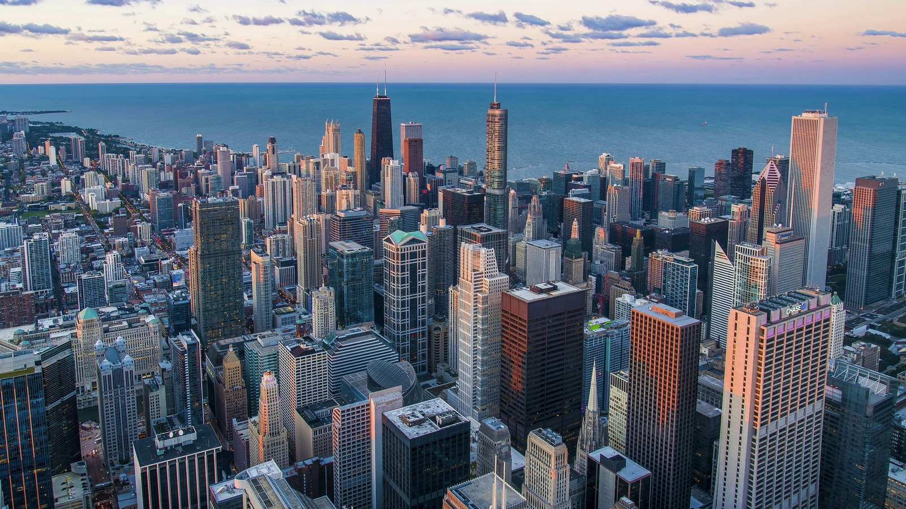
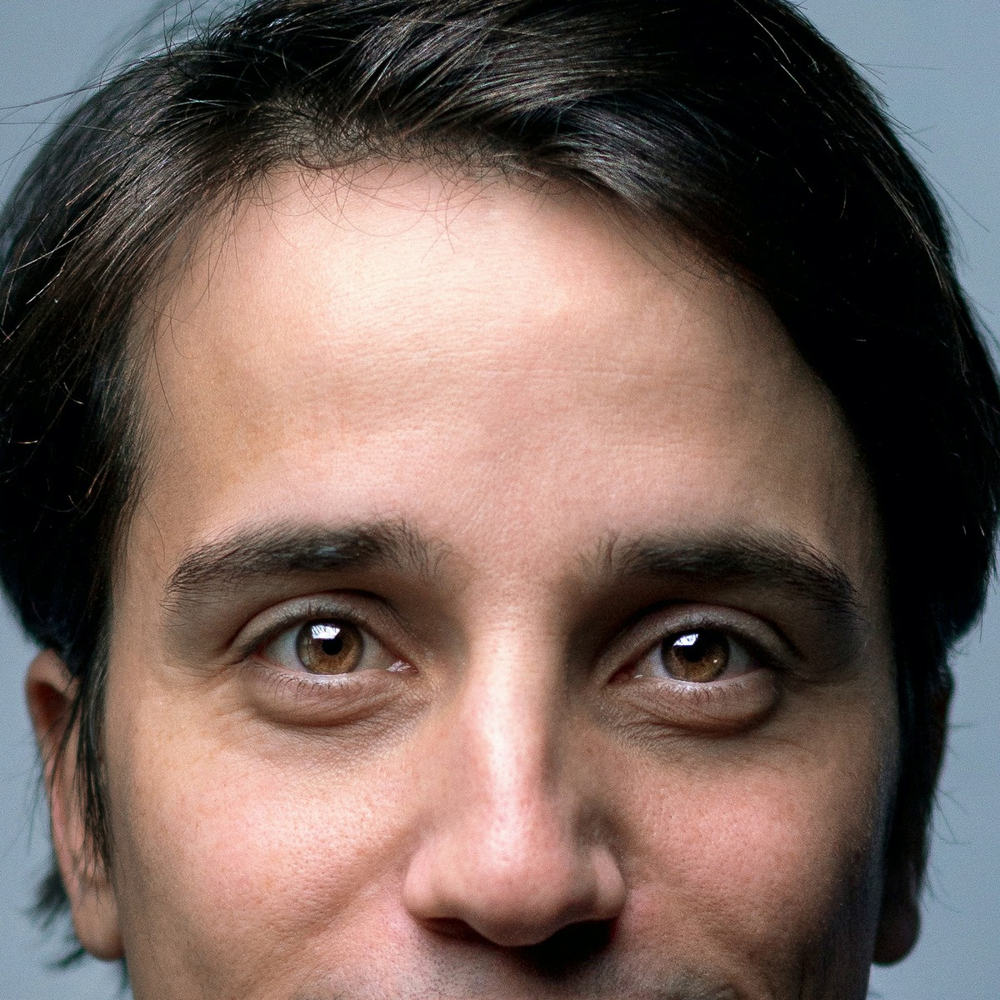
5. Chroma: the tell YouTube forgets
Every stream is 4:2:0. At 4K, the chroma planes are 1920×1080; at 1080p, they are 960×540. If the 4K master is a 1080p upscale, its 4K chroma is just the 1080p chroma upscaled. We extracted the U and V planes with ffmpeg -vf extractplanes=u and compared them. A native 4K source should have chroma detail beyond the 1080p chroma; an upscale cannot.
6. The visual high-pass
We subtracted a Gaussian blur (σ = 2 px at 4K) and amplified the residual. Native 4K shows pores, individual hairs, fabric weave, window frames, foliage. An upscale shows the same edges as 1080p plus a little noise. This is the test a human can read without trusting a number.
If a 4K frame can be reconstructed from 1080p at > 45 dB, it is effectively 1080p or lower. If it scores < 35 dB, it contains real detail above 1080p (or the compression is very noisy). A native 4K frame at 6 Mbps usually lands in the high 20s to mid 30s. Our face lands at 52.6 dB.
The face
The talking head is the point of the video. It is also the clearest upscale. At the same display size, 1080p, 1440p and 2160p are the same face with different amounts of compression noise. There is no pore, no fine hair, no fabric weave, no skin texture in the 4K that is not already in the 1080p.
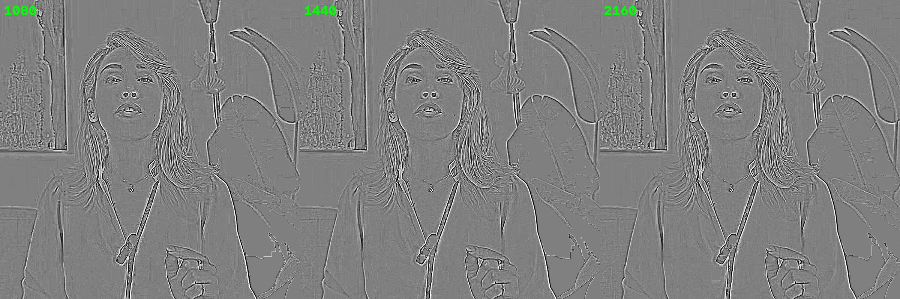
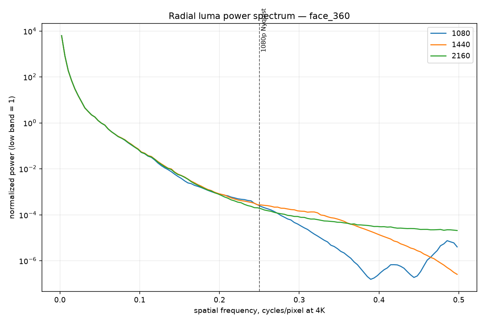
The 720p bombshell
If the 4K face had any real detail beyond 1080p, the 1080p rendition would predict it better than the 720p rendition. It does not. Upscaling 720p to 4K and comparing to the actual 4K gives 42.01 dB; upscaling 1080p gives 42.07 dB. The difference is 0.06 dB — within measurement noise. The 4K face contains essentially all of the information that is already in the 720p rendition.
This is the signature of a low-resolution avatar pipeline: a 1080p (or lower) talking-head generator, a 4K timeline, and a resize on export. The 4K file is real 3840×2160; the face is not.
Chroma agrees
The 4K chroma planes are 1920×1080. If they were native, they would carry detail beyond the 1080p chroma (960×540). They do not: upscaling the 1080p U/V planes to 1920×1080 and comparing gives 50.8 dB (U) and 51.5 dB (V) for the face. The 4K chroma is a smooth resize of the 1080p chroma. The same test on the b-roll city gives 48.6/50.7 dB; the crowd gives 43.7/44.5 dB.
The 4K face is not a “better encode” of a 4K performance. It is a 1080p performance encoded at 4K. If you switch YouTube from 1080p to 2160p, you are paying 5× the bandwidth for a slightly cleaner resize of the same face.
The b-roll
Not every frame is the avatar. The video cuts to AI-generated cityscapes, a protest crowd, typography vortexes, newspaper graphics and control-room shots. Some of that b-roll has more texture than the face. None of it is convincing native 4K.
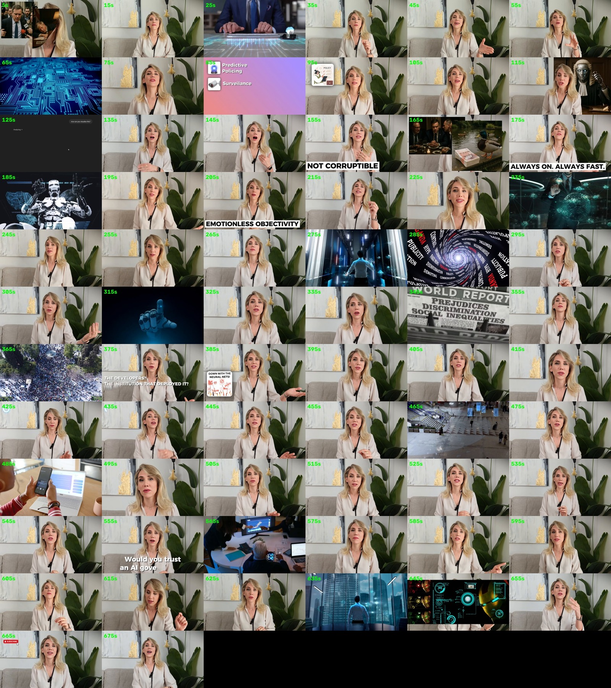
City b-roll, 240 s
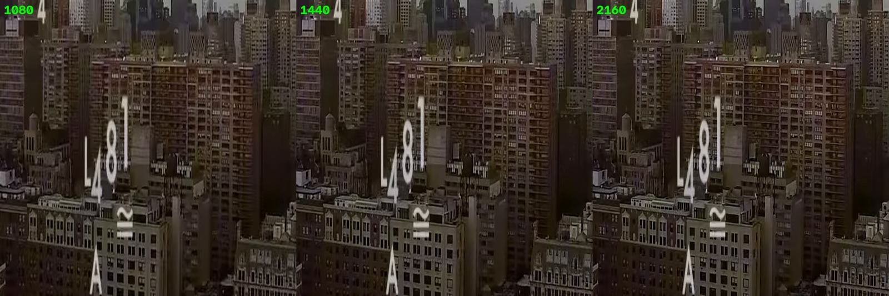
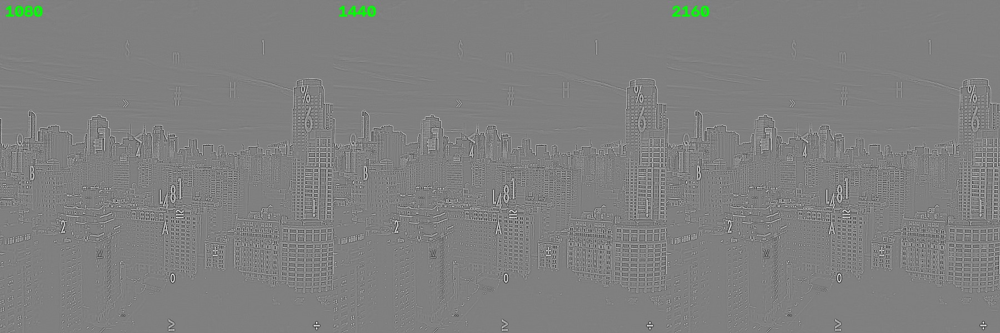
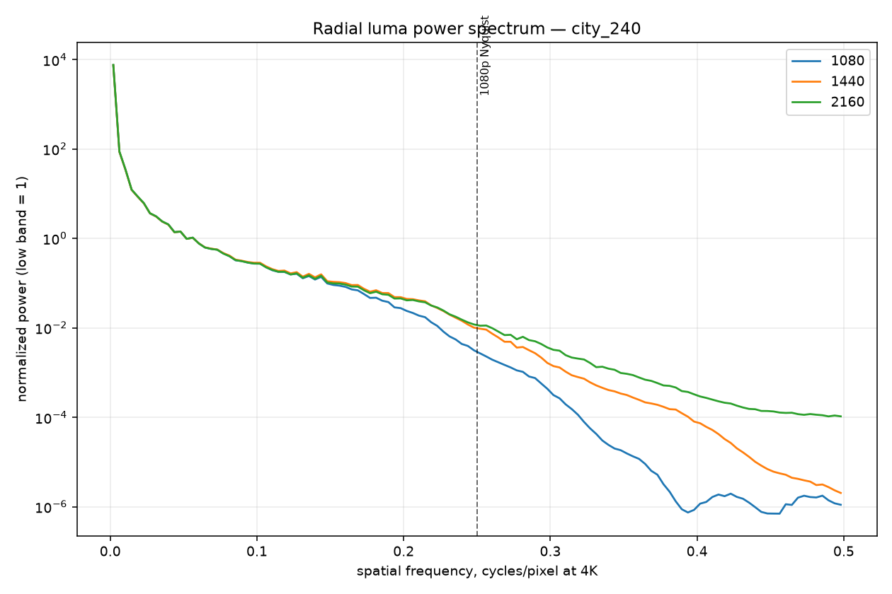
Crowd b-roll, 365 s — the honest complication
The crowd shot is the one scene that gets close to the native-reference range. Its 4K→1080p→4K score is 29.1 dB, between the native city (26.6 dB) and native portrait (33.8 dB). The 1440p→4K prediction is 30.0 dB, clearly better than 1080p (25.6 dB). This could mean one of two things: a higher-resolution stock clip, or a very good upscale with sharpening. The high-pass image is the tiebreaker.
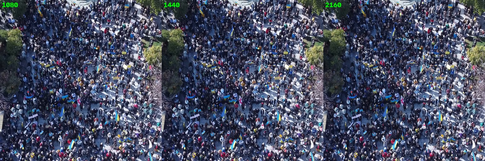
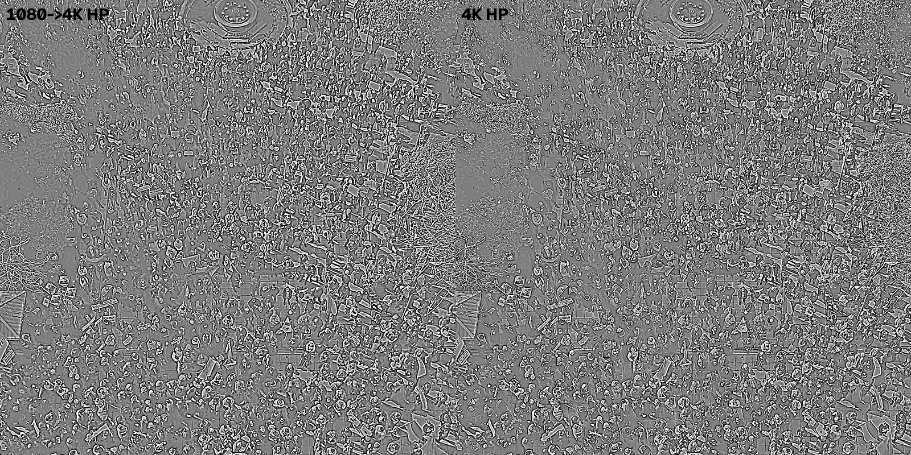
This scene may contain some real detail above 1080p. It is the strongest counter-example in the video. But it is a short stock-style b-roll clip, not the presenter, and even here the 4K does not reveal faces, clothing weave or sign text that the 1080p lacks. The video as a whole is still dominated by 1080p-limited content.
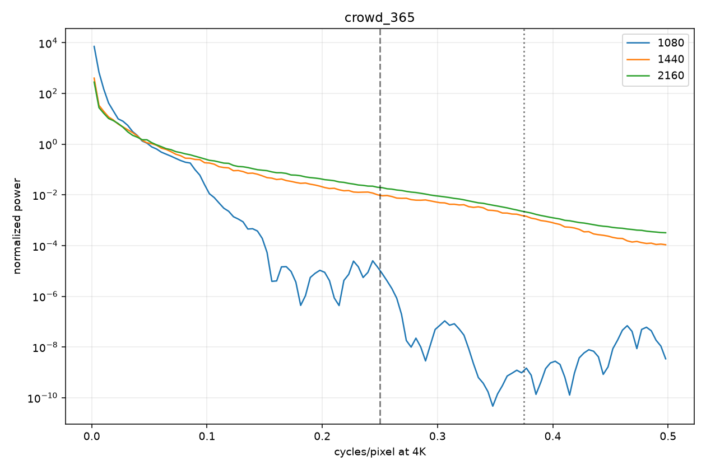
Typography and graphics, 285 s
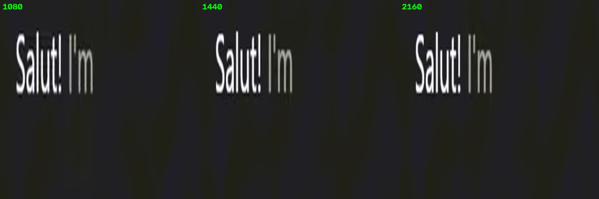
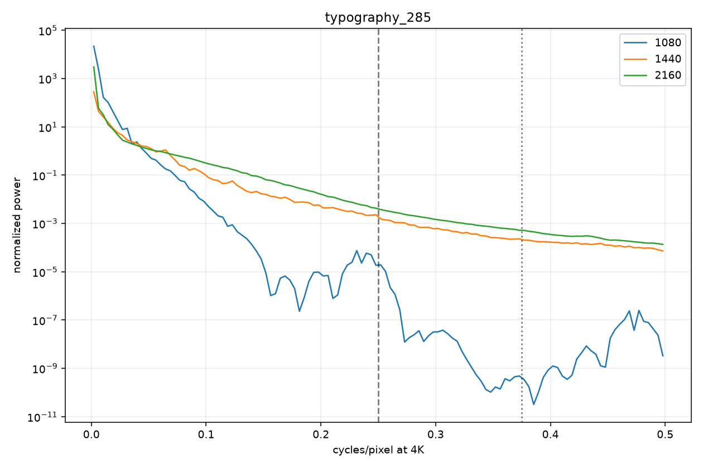
The graphics are the second tell. A 4K timeline with vector text would produce razor-sharp letter edges even if the underlying footage were upscaled. Here the text is soft and haloed at 4K, exactly like a 1080p frame that was resized. The whole composition — avatar, b-roll, overlays — appears to have been exported from a 1080p timeline and scaled to 4K in one pass.
Across the runtime
One frame can be unlucky. We sampled 68 frames, one every 10 seconds, and ran the 4K→1080p→4K round-trip on each. The distribution is not ambiguous.
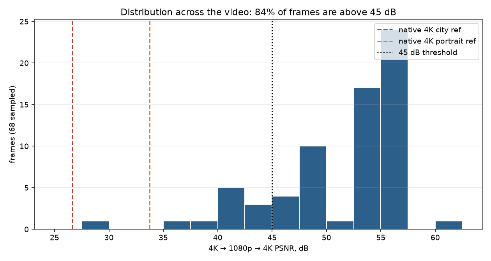
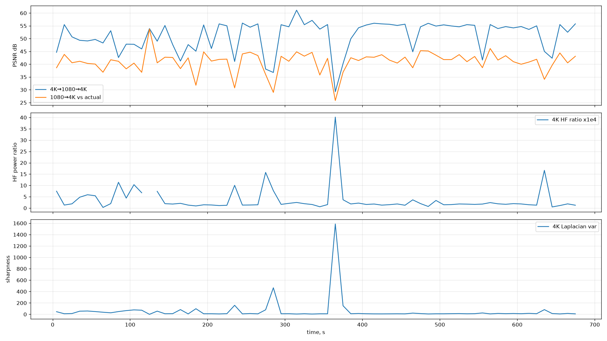
PSNR is content-dependent. A smooth native 4K frame can score higher than a detailed 1080p frame. That is why the face spectrum and the native reference matter more than the histogram alone. The histogram tells you the scale of the effect; the spectrum tells you why.
| Scene | 720→4K | 1080→4K | 1440→4K | 4K→1080→4K | Read |
|---|---|---|---|---|---|
| Face, 360 s | 42.0 | 42.1 | 44.8 | 52.6 | ≤720p: 720 and 1080 are identical |
| Face, 480 s | 45.4 | 46.3 | 48.5 | 52.8 | ~720–1080p |
| City, 240 s | 30.4 | 33.8 | 36.7 | 37.3 | ~1080–1440p |
| Crowd, 365 s | 23.1 | 25.6 | 30.0 | 29.1 | ~1440p+, possibly higher-res stock |
| Typography, 285 s | 24.9 | 28.3 | 31.4 | 35.7 | ~1080–1440p, text still soft |
The face is the dominant subject and the weakest link. The b-roll is a mixed bag: some of it is sharper than the face, none of it reaches a clean native-4K reference, and the graphics were clearly not re-rendered at 4K. The 4K upload is a single-pass resize of a mostly-1080p timeline, with a few higher-resolution stock clips surviving inside it.
The April 2026 timestamp
The video is dated 8 June 2025. When you download it with yt-dlp, the stream URLs carry lmt timestamps from 19 April 2026. That looks like a smoking gun. It is not. It is YouTube re-encoding its ladder — and it is a useful reminder that metadata is not pixels.
| Stream | lmt | What it means |
|---|---|---|
| Upload / publish date | 2025-06-08 14:28:33 UTC | The video was published. |
| VP9 720p | 2026-04-19 23:11:37 | The whole VP9 ladder was re-encoded in one 26-second job. |
| VP9 1080p | 2026-04-19 23:11:42 | |
| VP9 1440p | 2026-04-19 23:11:59 | |
| VP9 2160p | 2026-04-19 23:12:03 | |
| AV1 1440p | 2026-05-22 06:35:01 | The AV1 ladder arrived a month later — a separate codec rollout. |
| AV1 2160p | 2026-05-22 06:35:24 |
lmt is not the upload date. It is the last time YouTube's encoder touched that stream. YouTube periodically re-encodes old videos, especially when it adds AV1 or refreshes a ladder. We checked other 2025 videos on the same channels and found lmt values scattered across February, April and July 2026. Some streams still carried their 2025 dates; others had been refreshed. This is normal infrastructure behavior, not evidence that the creator replaced the file.
The April 2026 timestamp does not prove that the 4K was added in April 2026, and it does not prove that the creator uploaded a new master. YouTube re-encodes old videos. The 4K upscale is proven by the pixels, not by the timestamp. If you put “April 2026 = 4K added later” in a public thread, a YouTube engineer can correctly call it a red herring. The stronger claim is simpler: the 4K stream itself is a 1080p upscale, whenever it was encoded.
YouTube gives the 4K stream 5.8× the video bitrate of 1080p for only 4× the pixels. The creator pays only the upload; YouTube pays the storage and bandwidth. A 4K upload also tends to get a better 1080p/1440p encode, a premium badge, and a perceived quality bump on large screens. It is a cheap trick with a real perceptual payoff — until someone measures the spectrum. The 4K file is 5.2× larger; the information is not.
The container metadata is equally unhelpful. The WebM tag is ENCODER=Lavf63.1.102 — YouTube's muxer. There is no original camera, NLE, creation time, or uploader metadata. YouTube strips it. The only “original” metadata left is the video's publish date, title, description, chapters, tags, and the auto-dub/caption tracks. None of those tell you the source resolution.
The person is real. The brand is synthetic.
The 4K is the easy part. The identity is the plot twist: “El” is not an AI invention. She is Elena Markoska — a real PhD in engineering science from the University of Southern Denmark, a former PhD research fellow, and a Senior Data Scientist at the Bank of England. The synthetic part is the production, the pseudonym, and the monetized “am I AI?” panic.
The strong claim — there is no real person behind the character — does not survive the public record. The weaker claim — the character is a synthetic construction — does. Both are true: the human is real; the on-screen persona is a brand with AI enhancement, AI clones and a 1080p→4K upscale. If you posted the strong claim, correct it; keep the weaker one.
The public record
| Source | What it says |
|---|---|
| SDU research portal | Elena Markoska, PhD thesis A Framework for Automated Real-Time Performance Evaluation of Smart Buildings, The Maersk Mc-Kinney Moller Institute, University of Southern Denmark, Odense. Published 29 Jul 2019; degree awarded 15 Oct 2019. Supervisors: Sanja Lazarova-Molnar, Mikkel K. Kragh. DOI 10.21996/5hay-tm27. |
| OTOWN (local news, 5 Nov 2019) | “Som 5-årig ville Elena have en ph.d.-grad…” — a profile of Elena Markoska, PhD and software engineer from SDU; from Skopje, North Macedonia; came to Denmark in January 2016; defended her PhD in October 2019 on real-time monitoring of building energy use; then a research assistant at the Maersk Mc-Kinney Moller Institute. |
| Bank of England, Staff Working Paper No. 924 (2021) | “Impacts of the Covid-19 crisis: evidence from 2 million UK SMEs” — by James Hurley, Sudipto Karmakar, Elena Markoska, Eryk Walczak and Danny Walker. |
| Bank of England, Staff Working Paper No. 943 (2021) | “Did the Covid-19 local lockdowns…” — same author group, including Elena Markoska. |
| Bank of England, 2026 working paper | “Locking in the rate or staying flexible? Mortgage refinancing around an interest rate shock” — Cocco, Markoska, Tak. |
| LinkedIn (public profile, login-walled) | “Elena M. — Senior Data Scientist at Bank of England.” Public posts describe the BoE SME paper and her PhD work in Odense, Denmark. |
| Archived channel, Jan 2021 | “Walk the walk”, 230–246 subscribers, keywords: PhD, Denmark, London, machine learning, academia, “why I moved out of denmark”. Videos: “5 unusual tips for starting your PhD”, “How to get a data science job during COVID”, “Going to Denmark?”. Archived thumbnails show a real woman with dark hair and bangs. |
| Period | Role / degree | Organisation |
|---|---|---|
| 2010–2014 | BS, Academic Informatics Studies / Computer Science | Faculty of Computer Science and Engineering, Skopje |
| 2014–2015 | MS, Computer Software Engineering (10/10) | Faculty of Computer Science and Engineering, Skopje |
| 2016–2019 | PhD, Engineering Science; thesis on real-time building-performance evaluation; machine learning for time-series forecasting | University of Southern Denmark, Odense |
| 2017 | Research affiliate (6 months) | UC Berkeley / Lawrence Berkeley National Lab |
| 2016–2020 | PhD research fellow; R&D scientist; teaching/examiner | University of Southern Denmark |
| Jan–Jul 2020 | R&D scientist | CSIRO, Newcastle, Australia |
| Oct 2020–Nov 2023 | Data Scientist | Bank of England, London |
| Nov 2023–present | Senior Data Scientist (leads a data-science team) | Bank of England, London |
The old channel is not a random stolen backstory. It is Elena's own 2020–21 personal channel, created after the PhD, the CSIRO stint and the move to the Bank of England. The keywords, the video titles and the career timeline match the current bio almost word for word. The name “El” is most naturally read as short for Elena.
The local profile fills in the timeline: Skopje → Odense in January 2016 → PhD defence in October 2019 → research assistant at SDU → London / Bank of England. The old channel's “Going to Denmark?” video and its “why I moved out of denmark” keyword are not a borrowed backstory; they are her actual move. Third-party trackers recorded the old channel's country as North Macedonia; the current channel lists the UK. That is another small match, not a contradiction.
Moves to Denmark in January 2016. Thesis: A Framework for Automated Real-Time Performance Evaluation of Smart Buildings. Published 29 July 2019; defended October 2019; degree awarded 15 October 2019. Research on metadata models, microservices and building-performance evaluation.
R&D scientist at CSIRO in Australia (Jan–Jul 2020), then Data Scientist at the Bank of England in London (Oct 2020). The old channel's “why I moved out of denmark” keyword and its “How to get a data science job during COVID” video fit this period.
“5 unusual tips for starting your PhD”, “How to get a data science job during COVID”, “Going to Denmark?”. 230–246 subscribers. The videos are now private; the thumbnails survive in the Wayback Machine.
Co-author on the 2-million-SME Covid dataset and the local-lockdown paper. The “data scientist in finance” claim is not a persona; it is a CV.
Namecheap, privacy-protected. The current site launches within weeks.
Website funnel, newsletter, quizzes, book, course waitlist, Ko-fi. The AI channel is created on 7 June 2025; the target video is uploaded on 8 June; the old 2020 channel is relaunched as “House of El” on 9 June.
470k views, 23.6k likes, 4.5k comments. She says she is real, admits to making four AI clone videos, and sells a course on spotting AI.
Main channel: ~298k subs, 578 videos, 60.4M views. AI channel: ~155k subs, 60 videos. Plus a 2026 BoE mortgage-refinancing paper. The output is daily-ish.
@realhouseofel: 161 followers, 8 videos. @realhouseofelai: 26 followers, 1 video. The audience is YouTube.
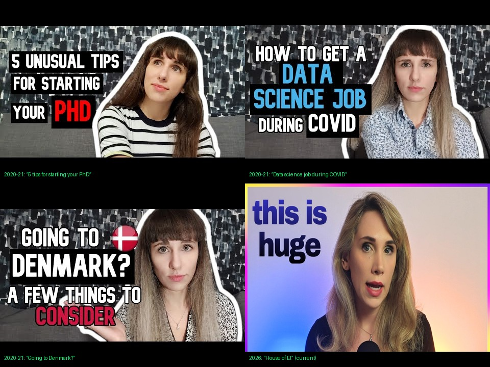
The face: real person, synthetic presentation
The 2021 archive shows a real woman with brown hair and bangs. The LinkedIn profile photo and the 2025–26 “El” are blonde. The face shape, nose and necklace are close enough that the same person is the most parsimonious explanation. But the current face is heavily smoothed, lit like a studio avatar, and looks AI-enhanced. The channel admits to using AI clones for four videos. Whether the current on-screen El is Elena with a beauty filter/upscaler or an avatar built from her likeness is unresolved. The human is not.
This is the part the “she is fake” framing gets wrong. A real person can use an AI avatar of herself, a voice clone, AI b-roll and an upscale — and still be a real person. The synthetic production is evidence of a workflow, not of a non-existent human.
The credential: real, but framed generously
The PhD is real: Engineering Science, University of Southern Denmark, 2019. The thesis is about smart-building performance evaluation, metadata models, microservices and machine learning for time-series forecasting — not a pure AI doctorate, but not devoid of ML either. The channel's “PhD in Computer Science” is a simplification of a CS/software-engineering background (BS and MS in Skopje) inside an engineering doctorate. “AI-focused doctoral work” is a stretch, but the ML component is real. The “senior data scientist in policy and finance” is accurate: Bank of England, 2021–present, multiple working papers; before that, CSIRO and SDU. The “polymath” and “geopolitical analyst” are brand positioning, not credentials.
This is a fair criticism: the credential is not fake, but the marketing flatters it. “PhD in Computer Science” sounds more AI-adjacent than “PhD in Engineering Science on smart buildings.” The audience is not told which. The old channel actually supports the PhD claim — the videos are literally about starting a PhD and getting a data-science job — while the current channel upgrades the framing.
So “where are the papers?” has an answer: the SDU thesis, BoE Staff Working Papers 924 and 943, and a 2026 BoE mortgage-refinancing paper. They are real papers. They are just not AI papers — which is exactly why the “PhD in Computer Science / AI” framing does so much work.
The “proof” video is still a sales pitch
On 23 February 2026, the main channel published “You're Right — I'm AI generated (Here's The Proof)”. The title is engineered to win the argument in the thumbnail. In the video she says:
With the SDU thesis and the BoE papers in hand, the core claim is credible. The video is still a produced comparison, not a live, unedited demonstration. It shows four intentionally bad AI clones, points out their lip-sync and blinking flaws, and concludes that the main El is real. It also links to the book, the audiobook, the AI course and the newsletter. The controversy is not just a defense; it is the top of the funnel. The video has 470k views and 23.6k likes, several times the target video's audience.
YouTube → website → newsletter → book/course. The book Awake: The Practice of Critical Thinking in an Age of Soft Lies sells for £11.45 on Gumroad, with 43 ratings (4.3 average) and a “7,000+ readers” claim that Gumroad does not expose. The AI course is a waitlist; the newsletter claims “100k+ thinkers”; Ko-fi is linked in every description. The “PhD” is the trust anchor for all of it — and it is a real PhD, just not the one the branding implies.
Why the pseudonym?
Elena Markoska is a Senior Data Scientist at the Bank of England. A public YouTube channel that comments on geopolitics, AI and finance is a conflict-of-interest minefield for a central-bank employee. The channel's disclaimer says the views are her own and not her employer's. A pseudonym and a separate brand are a reasonable way to keep the day job and the YouTube job apart. That does not make the persona a deepfake; it makes it a professional boundary. It also, conveniently, makes the “is she AI?” question impossible to settle from the videos alone — which is good for engagement.
The leading hypothesis Strong
- Elena Markoska, PhD (SDU 2019), Senior Data Scientist at the Bank of England.
- The 2020–21 “Walk the walk” channel is hers: PhD, Denmark, London, data science, “why I moved out of denmark”.
- “El” is most naturally read as short for Elena; the pseudonym separates the Bank of England career from the YouTube brand.
- The current face is Elena with heavy AI enhancement/upscaling — or an avatar built from her likeness. Either way, the human is real.
- The AI clones, AI b-roll, auto-dubs and 4K upscale are production tools, not evidence of a non-existent person.
The alternative Weaker
- An operator acquired the old channel and built a synthetic persona around Elena's public biography, papers and likeness.
- This would explain the face change, the private old videos and the polished avatar.
- But there is no evidence of a sale or transfer, and the simplest explanation is the same person rebranding.
- The old channel's keywords and the current bio match too well to be a coincidence; the person is the through-line.
Verdict: the person is real; the on-screen presentation is synthetic. The 4K finding does not depend on the identity question, but the identity question changes the story. The interesting scandal is not “AI woman fools YouTube.” It is “a real PhD/data scientist rebranded her old channel into a faceless AI/geopolitics business, uses AI clones and a 1080p→4K upscale, and sells a course on spotting AI while the internet argues about whether she is AI.”
The 4K upscale is real. The synthetic production is real. The monetized AI panic is real. The “there is no real person” claim is not. The “the character is a synthetic brand” claim is. Correct the first, keep the rest — that is the stronger, more defensible story.
Prove / cannot prove
A good forensic report separates the measurement from the inference. Here is the line.
What we can prove High confidence
- The 2160p VP9 stream is an upscale. The face is effectively 720–1080p; the b-roll tops out around 1440p; no scene shows convincing native 4K detail.
- The 4K face round-trips through 1080p at 52.6–54.3 dB (SSIM 0.986–0.997); native 4K references at the same bitrate score 26.6–33.8 dB.
- 720p and 1080p predict the 4K face equally well (42.01 vs 42.07 dB). The 4K adds no information above 720p for the face.
- The 4K chroma is the 1080p chroma upscaled (50.8/51.5 dB).
- 84% of 68 sampled frames are above 45 dB; 63% are above 50 dB.
- The 4K file is 5.2× larger because YouTube's bitrate ladder gives 4K 5.8× the video bitrate for 4× the pixels.
- Elena Markoska is a real, verifiable person: PhD in Engineering Science, University of Southern Denmark, degree awarded 15 Oct 2019; Senior Data Scientist at the Bank of England; co-author of BoE Staff Working Papers 924 and 943.
- The 2020 “Walk the walk” channel is hers: the PhD/Denmark/London/data-science keywords and video titles match her career. The rebrand to “House of El” happened in 2025.
- The channel admits to using AI clones for some videos, and the “am I AI?” video is a top-of-funnel product for the book/course.
- The April 2026
lmtis a re-encode timestamp, not the upload date.
What we cannot prove Open
- That the current on-screen face is Elena herself rather than an AI avatar/likeness. The human is verified; the face pipeline is not.
- Whether the “PhD in Computer Science” / “AI-focused doctoral work” framing is an innocent simplification or deliberate flattery. The PhD is real, in Engineering Science, with machine learning for time-series forecasting; it is not an AI doctorate, but it is not unrelated either.
- Whether the old channel was sold or transferred rather than rebranded by Elena. There is no evidence of a sale; the simplest explanation is the same person.
- That the 4K was added in April 2026. YouTube re-encodes old videos; the timestamp is not evidence.
- That the crowd b-roll is native 4K, a higher-res stock clip, or a good upscale. It is the one ambiguous scene.
- Whether the channel follows YouTube's AI-disclosure rules for the clone segments. The videos describe the clones, but the platform label is not visible in the downloads.
“House of El's 4K is a 1080p upscale; the channel is a rebrand of a real PhD/data scientist's old channel; the synthetic production and the AI panic are monetized.” Every clause in that sentence is supported by a file, an archive snapshot, or a public record.
“There is no real person” is false. Elena Markoska is real, with a PhD from SDU and a Bank of England career. “The character is a synthetic brand” is true. Pseudonym, AI-enhanced face, AI clones, AI b-roll, 1080p→4K upscale. “The 4K is real” is false. It is a 1080p upscale. “The AI panic is organic” is false. It is a product. Keep the middle two; drop the first and last.
Reproducibility
Everything here is repeatable from public files. The downloads, scripts and derived images are in the project folder. YouTube's formats change; the measurements are dated 26 October 2026.
Files
| Path | What it is |
|---|---|
rDKzAml5nn8_720p.webm | VP9 720p + Opus, 66.4 MiB |
rDKzAml5nn8_1080p.webm | VP9 1080p + Opus, 97.7 MiB |
rDKzAml5nn8_1440p.webm | VP9 1440p + Opus, 272.8 MiB |
rDKzAml5nn8_2160p_vp9.webm | VP9 2160p + Opus, 509.3 MiB |
house-of-el/index.html | This report |
house-of-el/assets/ | Figures, frames, charts, archived thumbnails |
house-of-el/spectral.py | Radial FFT, high-pass, spectrum plots |
house-of-el/roundtrip.py | 4K→1080/1440/720→4K round-trip and cross-resolution PSNR/SSIM |
house-of-el/timeseries.py | 68-frame sample, per-frame metrics, histogram data |
house-of-el/timeseries.csv | Raw per-frame numbers |
house-of-el/exa_search.py | Targeted web search for the persona footprint |
house-of-el/dl.sh | The exact yt-dlp download ladder |
house-of-el/refs/ | Full-resolution native 4K reference frames |
The frame sequences (frames*, seq*) are generated by the commands below and are not included, to keep the folder small. The scripts read ANALYSIS_DATA_DIR (default: the script's directory); point it at the folder containing frames1080/, seq4k/, etc.
Key commands
Download, probe, extract frames
# video-only ladder + original English audio yt-dlp -f "247+251-20" --merge-output-format webm -o "rDKzAml5nn8_720p.%(ext)s" "$URL" yt-dlp -f "248+251-20" --merge-output-format webm -o "rDKzAml5nn8_1080p.%(ext)s" "$URL" yt-dlp -f "271+251-20" --merge-output-format webm -o "rDKzAml5nn8_1440p.%(ext)s" "$URL" yt-dlp -f "313+251-20" --merge-output-format webm -o "rDKzAml5nn8_2160p_vp9.%(ext)s" "$URL" # one frame per 10 s, full resolution ffmpeg -i rDKzAml5nn8_2160p_vp9.webm -vf "fps=1/10" -compression_level 1 seq4k/%04d.png # 1080p round-trip: 4K -> 1080 -> 4K (area down, Lanczos up) # see house-of-el/roundtrip.py for the exact PSNR/SSIM code
Native 4K reference encode
# 2-second VP9 at 6 Mbps, same ballpark as YouTube's 4K stream
ffmpeg -loop 1 -i ref_city_4k.png -t 2 -r 30 \
-vf "scale=3840:2160,format=yuv420p" \
-c:v libvpx-vp9 -b:v 6M -row-mt 1 -threads 8 ref_city_4k.webm
ffmpeg -ss 1 -i ref_city_4k.webm -frames:v 1 ref_city_4k_frame.png
Limitations
- One video. The 4K upscale finding is specific to
rDKzAml5nn8. The channel may upload other videos differently. - AI-generated content is soft. A native 4K render of a smooth avatar could also round-trip well. The face's flat noise floor above 0.25 cyc/px and the 720≈1080 equality are what make “soft native 4K” unlikely.
- The native reference is a photo, not a video. It calibrates the codec/bitrate, not the content. The crowd scene is the closest content match and is treated as ambiguous.
- PSNR is content-dependent. We report conservative no-shift numbers; subpixel alignment can add 1–2 dB. The conclusion does not depend on that margin.
- YouTube changes. Formats, bitrates and
lmtvalues are dated 26 October 2026. Re-running later may give different numbers.
Appendix
A. Full format ladder
| ID | Ext | Resolution | FPS | Codec | Video bitrate | Note |
|---|---|---|---|---|---|---|
| 160 | mp4 | 256×144 | 30 | AVC | 0.080 | lowest |
| 278 | webm | 256×144 | 30 | VP9 | 0.095 | |
| 133 | mp4 | 426×240 | 30 | AVC | 0.175 | |
| 242 | webm | 426×240 | 30 | VP9 | 0.138 | |
| 134 | mp4 | 640×360 | 30 | AVC | 0.334 | |
| 243 | webm | 640×360 | 30 | VP9 | 0.233 | |
| 135 | mp4 | 854×480 | 30 | AVC | 0.603 | |
| 244 | webm | 854×480 | 30 | VP9 | 0.374 | |
| 136 | mp4 | 1280×720 | 30 | AVC | 1.168 | AVC 720p |
| 247 | webm | 1280×720 | 30 | VP9 | 0.677 | used |
| 137 | mp4 | 1920×1080 | 30 | AVC | 2.194 | AVC 1080p |
| 248 | webm | 1920×1080 | 30 | VP9 | 1.061 | used |
| 271 | webm | 2560×1440 | 30 | VP9 | 3.214 | used |
| 400 | mp4 | 2560×1440 | 30 | AV1 | 2.531 | AV1 1440p |
| 313 | webm | 3840×2160 | 30 | VP9 | 6.123 | used |
| 401 | mp4 | 3840×2160 | 30 | AV1 | 4.402 | metadata only |
B. Frame data
The full 68-frame table is in house-of-el/timeseries.csv. Columns: t, psnr_rt1080, psnr_rt1440, psnr_up1080, psnr_up1440, hf_ratio, hf_mid, hf1080, var4, lap4. The key rows:
| t (s) | 4K→1080→4K | 4K→1440→4K | 1080→4K | 1440→4K | Scene |
|---|---|---|---|---|---|
| 240 | 37.3 | 41.6 | 33.8 | 36.7 | city b-roll |
| 285 | 35.7 | 40.0 | 28.3 | 31.4 | typography vortex |
| 360 | 52.6 | 54.3 | 42.1 | 44.8 | talking head |
| 365 | 29.1 | 33.1 | 25.6 | 30.0 | crowd b-roll |
| 480 | 52.8 | 55.0 | 46.3 | 48.5 | talking head |
C. Sources & links
- Target video: youtube.com/watch?v=rDKzAml5nn8
- Main channel: youtube.com/@HouseofEl · AI channel: youtube.com/@houseofel-ai
- “You're Right — I'm AI generated (Here's The Proof)”: youtube.com/watch?v=K3SD34vHPe4
- Website: houseofel.net · book: houseofell.gumroad.com/l/isdum
- Elena Markoska's PhD thesis: SDU research portal · DOI 10.21996/5hay-tm27
- OTOWN profile (5 Nov 2019), archived: web.archive.org/…/otown.dk/…
- Bank of England Staff Working Paper 924: Impacts of the Covid-19 crisis: evidence from 2 million UK SMEs (Hurley, Karmakar, Markoska, Walczak, Walker, 2021)
- LinkedIn (login-walled; the direct profile is not linked here) — the public education/experience record matches the SDU and Bank of England sources above.
- Wayback, 2021 channel snapshot: web.archive.org/web/20210117055850/…/walkthewalk007
- Wayback, 2021 channel ID snapshot: web.archive.org/web/20210117132432/…/UCJ52xpIoq5aKaIU_ZP40-nQ
- r/Destiny discussion: reddit.com/r/Destiny/comments/1qg879h · r/artificial: reddit.com/r/artificial/comments/1vbrvq2
- Critical blog post (unreachable at analysis time; snippet via Exa): kingofriver.com/…/houseofel-ask-google
- Third-party profile: archania.org/…/house-of-el (treats credentials as self-description)
- YouTube subscriber trackers: realtimesubcount.com/UCJ52…, asknaveen.com/channel/@houseofel
- Native 4K references: Unsplash photo IDs
1477959858617-67f85cf4f1df(city) and1500648767791-00dcc994a43e(portrait), downloaded at 3840 px and re-encoded at 6 Mbps.
This is a technical and archival analysis of public material. It is not a legal finding, a doxx, or a claim that a private individual is obligated to reveal her identity. The name and professional record are public: the SDU thesis, the Bank of England working papers and a 2019 local-news profile. We do not publish private contact details, addresses, family information or private social accounts; the LinkedIn profile is referenced as a matching professional record, not linked. The point is the production: the 4K is an upscale, the pipeline is synthetic, and the business model turns the ambiguity into content.